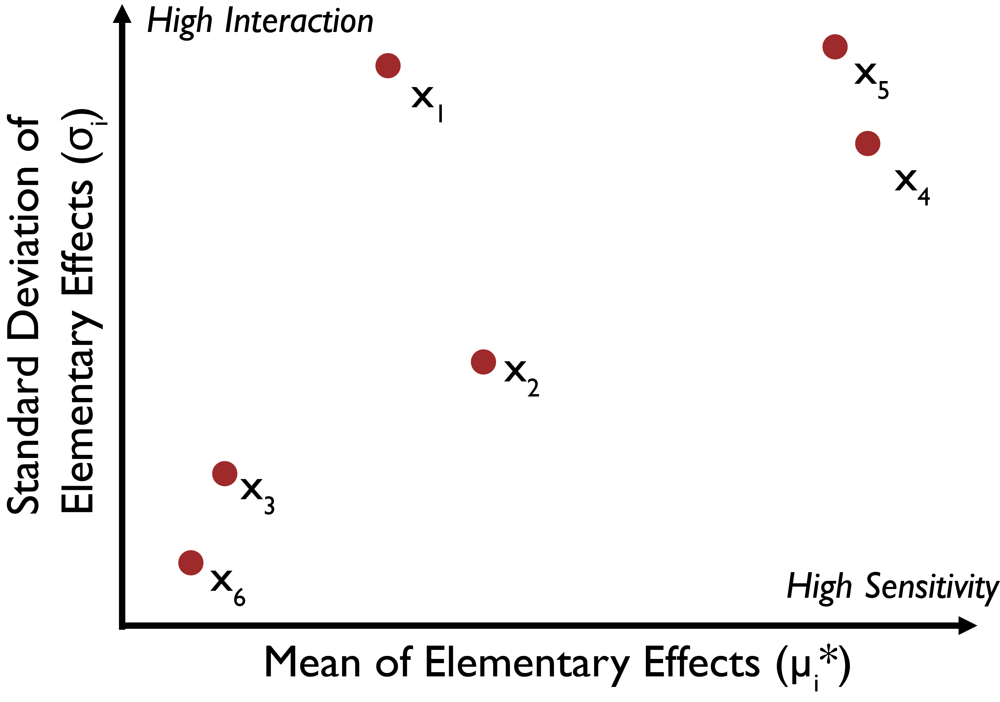

Elementary Effect Methods
Elementary Effect Methods¶
Elementary effect (EE) SA methods provide a solution to the local nature of the derivative-based methods by exploring the entire parametric range of each input parameter [91]. However, EE methods still use OAT sampling and do not vary all input parameters simultaneously while exploring the parametric space. The OAT nature of EEs methods therefore prevents them from properly capturing the interactions between uncertain factors. EEs methods are computationally efficient compared to their All-At-a-Time (AAT) counterparts, making them more suitable when computational capacity is a limiting factor, while still allowing for some inferences regarding factor interactions. The most popular EE method is the Method of Morris [74]. Following the notation by [51], this method calculates global sensitivity using the mean of the EEs (finite differences) of each parameter at different locations:
with \(r\) representing the number of sample repetitions (also refered to as trajectories) in the input space, usually set between 4 and 10 [38]. Each \(x_j\) represents the points of each trajectory, with \(j=1,…, r\), selected as described in the sampling strategy for this method, found above. This method also produces the standard deviation of the EEs:
which is a measure of parametric interactions. Higher values of \(\sigma_i\) suggest model responses at different levels of factor \(x_i\) are significantly different, which indicates considerable interactions between that and other uncertain factors. The values of \(\mu_i^*\) and \(\sigma_i\) for each factor allow us to draw several different conclusions, illustrated in Fig. 3.4, following the example by [91]. In this example, factors \(x_1\), \(x_2\), \(x_4\), and \(x_5\) can be said to have an influence on the model outputs, with \(x_1\), \(x_4\), and \(x_5\) having some interactive or non-linear effects. Depending on the orders of magnitude of \(\mu_i^*\) and \(\sigma_i\) one can indirectly deduce whether the factors have strong interactive effects, for example if a factor \(\sigma_i << \mu_i^*\) then the relationship between that factor and the output can be assumed to be largely linear (note that this is still an OAT method and assumptions on factor interactions should be strongly caveated). Extensions of the Method of Morris have also been developed specifically for the purposes of factor fixing and explorations of parametric interactions (e.g., [48, 92, 93]).
{kind=link}

Illustrative results of the Morris Method. Factors \(x_1\), \(x_2\), \(x_4\), and \(x_5\) have an influence on the model outputs, with \(x_1\), \(x_4\), and \(x_5\) having interactive or non-linear effects. Whether or not a factor should be considered influential to the output depends on the output selected and is specific to the research context and purpose of the analysis, as discussed in Chapter 3.2.¶